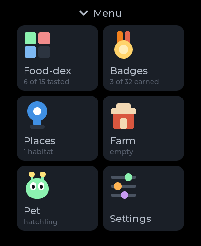
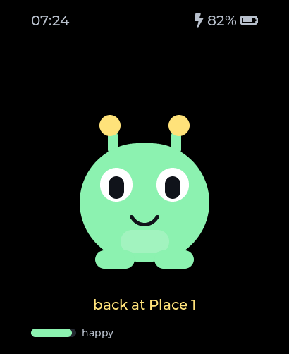
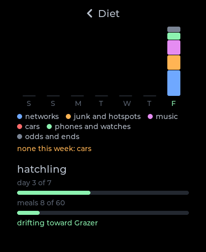

Manual
Everything the pet does, and how to look after it. You do not need any of this to start: install it, carry it about, and see what happens.
Getting around
The pet is always on the home screen. Everything else is one swipe away.
| Do this | To see |
|---|---|
| Swipe left | Diet: the week's food by group, how far along it is in its stage, and what it is drifting toward |
| Swipe right | Journal: today's entry, then the last seven days |
| Swipe up | Menu: food-dex, badges, places, farm, pet card and settings |
| Swipe down | Recent finds: the last eight meals, as kinds of food |
| Hold the pet | Its card: name, stage, generation, age and traits. Tap the pencil there to name it |
| Tap the pet | A pat. It cheers the pet up, though only every so often |
To go back, swipe the opposite way or tap the title at the top. A screen left alone returns to the pet by itself.

The home screen

- Stomach bar. It drains slowly all day and turns amber when the pet is hungry.
- Mood. One word: happy, content, bored, hungry, sleepy or queasy.
- The bell. The pet has a craving, or it is ready to retire. Its card says which.
- The line above the bar. What it has just found, a badge it has earned, or a place it has arrived at. It fades after a few seconds.
Feeding
You feed the pet by taking it places. It listens for Wi-Fi networks and Bluetooth devices, and each one it hears is food.
- Once a day each. The same network or device can be eaten once a day. At home it soon runs out of anything new; a walk through town is a feast.
- Meals. Finds are saved up and eaten together in an eating moment, with a chew and, if sound is on, a little noise.
- Variety matters. The same food over and over is worth less each time, and too much junk in a day makes the pet queasy.
- Cravings. Now and then it wants one particular food. The bell shows, and its card names the food. Finding it is worth extra.
- Going hungry. A pet left empty for a long time turns scrawny and flickers. Feed it and it recovers.
How often it listens
| When | It listens |
|---|---|
| Plugged in | Every 30 seconds |
| On battery, carried | Every minute |
| On battery, riding | Every 30 seconds, while the networks are going by |
| On battery, still | Every three minutes, then every five once it has not moved for ten |
| Quiet hours | Every 15 minutes. The pet is asleep |
The food-dex in the menu lists every kind of food and how many of each the pet has tasted. Filling it earns a badge.

Moods and character
The pet decides for itself what to do from one moment to the next: look around, sniff the air, play, nap, or grumble when it is hungry or queasy. How it feels shows in its eyes and mouth.
Every egg hatches with two traits out of six: lazy, greedy, curious, playful, shy or cheerful. They nudge what it likes doing, so no two pets behave quite alike. They are on its card.
The journal keeps a short entry for each day: how much it ate, anything rare it found, where it went, and when it grew.
Growing up
| Stage | Lasts | What happens |
|---|---|---|
| Egg | Under an hour | Hatches after its first five meals |
| Hatchling | About a week | Every pet looks the same |
| Juvenile | About two weeks | Becomes a Grazer if it ate mostly Wi-Fi, a Hunter if mostly Bluetooth. Cars count for the Hunter either way |
| Adult | About nine weeks | Becomes one of seven animals, decided by its diet |
A stage ends when the pet has both lived its days and eaten its meals. Time alone is not enough, so a pet that has been in a drawer picks up where it left off.
The seven animals
A Grazer can grow into three animals and a Hunter into three others, and a seventh is open to both. What each looks like is left for you to find out; how to raise one is not a secret.
| Animal | Grows from | Raise it on |
|---|---|---|
| Homebody | Grazer | Ordinary networks, eaten mostly in one place |
| Roamer | Grazer | Ordinary networks from all over: take it out with you |
| Scavenger | Grazer | More phone hotspots and open networks than ordinary ones |
| Singer | Hunter | Music above all: earbuds, headphones, speakers |
| Racer | Hunter | Cars above all, by their Wi-Fi or their Bluetooth: car parks and busy roads |
| Glowbug | Hunter | Phones and watches, or no clear lead among the three |
| Prism | Either | A bit of everything: many kinds of food, and no one group far ahead |
The diet screen says what yours is drifting toward, so you can see whether a change of habits is working. The more kinds of food it finds counts for more than how much of one: the same food eaten again in a day is worth half each time.
Raising a different one
A pet raised on the same daily round eats the same food, and grows into the same animal every time. To get another, change where it eats, or tell it what to like. Hold the pet to open its card and tap Favourite to pick a kind of food: networks, hotspots, music, cars or phones. Its favourite counts for much more in what it grows into, as a hatchling choosing between Grazer and Hunter and as a juvenile choosing its animal, though it still has to find some. A favourite does not help toward a Prism, which goes by what the pet really ate. The button goes away once the pet is grown.
Life speed
In Settings, "Life speed" sets how long a whole life takes: about 12 weeks on slow, 6 on medium and 3 on fast. It changes only how quickly the pet grows. Hunger and mood stay on real time, and changing it never makes the pet older than it was. The Diet screen counts the pet's own days, so a stage is always 7, 14 or 63 of them; on medium and fast it also says how much real time is left.
Places
The pet learns where it spends its time from the fixed networks around it, such as routers and printers.
- Habitats. Ten minutes among the same networks makes a habitat. It remembers twelve. The one with the most time is home. Open Places in the menu to see them and give each a name.
- Outings. Settling somewhere new, or visiting somewhere that is not home, lifts its mood and goes in the journal.
- Place badges. A network whose name gives the place away counts as a visit: coffee shops, hotels, stores, restaurants, airports, planes, trains, libraries, campuses, hospitals, museums, parks, and fire or police stations. It has to stay a few minutes; driving past does not count. One visit is bronze, three different ones silver, ten gold.
- Off the grid. An hour with no signals at all while being carried earns a badge of its own, with silver at three hours and gold at eight.
The built-in lists of place names lean toward chains in the United States. You can replace them with your own from the memory card.
A shop next door to where you are sitting can count too. The pet cannot tell which door you walked through.
Badges
There are 32 badges: for first times, for big days, for filling the food-dex, for places, and for raising generations. The Badges screen lists the ones you have first, then the rest with how to earn each.
Badges belong to you, not to one pet. They carry on from each pet to the next.
Retiring to the farm
When an adult has lived its full life it is ready to retire. The bell shows, its card says so, and the Farm tile turns amber. Then it waits for you. Nothing happens until you decide.
- Swipe up and open Farm.
- Tap "Retire".
- Hold the button until it fills, about three seconds.
The pet says goodbye and leaves for the farm, and an egg arrives in its place.
| Carries on | Starts fresh |
|---|---|
| The farm, your badges, your habitats and place badges, and your settings | The name, the diet and its history, the food-dex and the journal |
- The egg is the next generation. It takes one of its parent's two traits and gets one of its own.
- The farm holds twelve retired pets. Tap one to see its name, what it became, its generation, how long it lived and how much it ate.
- When a thirteenth retires, the oldest moves on. It is still counted.
Settings
Swipe up, then Settings. Each row has a minus and a plus.
| Setting | What it does |
|---|---|
| Name | Names the pet, up to twelve letters |
| Brightness | 20% to 100% |
| Text size | "large" makes the letters on every page bigger, for reading without glasses |
| Sound | All sounds, rare ones only, or off |
| Volume | 1 to 5 |
| Quiet from, until | The hours the pet sleeps. It makes no sound and listens less |
| Clock hour, minute | Sets the time |
| Screen | When plugged in: "stays on" for a desk, "sleeps" for a bag with a power bank |
| Pet | "paused" stops its time and its listening, for when it sits on a shelf |
| Life speed | Slow, medium or fast |
| Wrist raise | On battery, whether turning the screen toward you lights it |
| Touch | Whether a touch lights a dark screen. "off" is for a pocket: only the side button lights it |
| Card | "computer" lends the memory card to a computer over the cable |
| Dev log | For tuning. See the memory card section before turning it on |
| Start over | Replaces the pet with a new egg and clears everything, the farm included. Settings stay |
Power and the screen
- Plugged in. The screen stays on and dims when left alone, unless you set Screen to "sleeps".
- On battery. The screen goes dark after 15 seconds. Touch it, press the side button, or turn it toward you to light it.
- On a wrist. Turning the screen toward you happens all day, and each time costs battery. Set "Wrist raise" to off to make the battery last longer.
- In a pocket. Cloth and bumps can light the screen over and over. Set "Touch" and "Wrist raise" to off, and use the side button to look at the pet.
- Low battery. The pet gets drowsy and listens less. When it is nearly flat it saves itself, so nothing is lost.
- Switched off. Time stands still for the pet while the watch is off. It wakes exactly as it was.
Once a minute the whole picture shifts by a few pixels. That is on purpose: it stops the screen from wearing unevenly.
The memory card
The pet works without a card. With one, formatted FAT32, you can change its numbers
and name lists by editing plain text files in the card's pet folder.
| File | What it changes |
|---|---|
tuning.txt | Stomach, mood, cravings, how long each stage lasts, how strongly each trait pulls |
foods.txt | What each kind of food is worth |
food-names.txt | The names that make something a car, a hotspot, a printer, earbuds, a speaker, a watch or a TV |
place-names.txt | The network names that count toward place badges |
journal.txt | The sentences the pet writes its journal from |
- In Settings, set Card to "computer". The card shows up on your computer as a drive.
- In the
petfolder, each file has a copy ending in-defaults.txtthat holds the built-in values with notes. Copy one to the plain name, such asplace-names.txt, and edit the copy. - Eject the drive, then set Card back to "pet". The watch restarts and reads your file.
Lists look like this. Anything after a # is a note to yourself.
coffee = costa coffee, costa_wifi # one chain and its spellings
coffee_word = cafe, tea room # general words, once a day
earbuds = AirPods, Buds, "QC " # quotes keep the space at the endThe journal file is one sentence to a line. Write {food} where the
food's name should go, in the three lists that name one. Sentences are plain letters
only, up to 60 of them; the screen cannot show accents.
quiet = Hardly a nibble all day.
quiet = Thin times.
best = Oh, {food}! Lovely.If a file has a mistake the pet ignores that whole file, carries on with its built-in values, and tells you the file and line on the home screen when it starts.
The dev log
With a card in, the pet keeps a log of the kinds of food it finds, for tuning. With "Dev log" set to "names" it also writes the name of every network and device it hears. That is the one case where names are stored. Leave it off unless you are tuning, keep that file private, and turn it off and delete the log before the watch goes to anyone else. Addresses are never written either way.
When something is wrong
| What you see | What to do |
|---|---|
| No port when installing | Try another cable; many only charge. Then unplug the watch, hold its power button until the screen goes dark, and plug it back in |
| The watch is a drive, not a port | Card is set to "computer". Eject it and set Card back to "pet" |
| The time is wrong | Set Clock hour and Clock minute in Settings |
| A message naming a file at start-up | That settings file has a mistake on the line shown. Fix it or delete the file |
| It never eats at home | It has eaten everything there today. Take it out, or wait until tomorrow |
| You want to update | Install again from this site and do not erase. The pet and its farm are kept |
One more thing. There is a hidden way to peek at every animal the pet can become. Finding it is up to you.